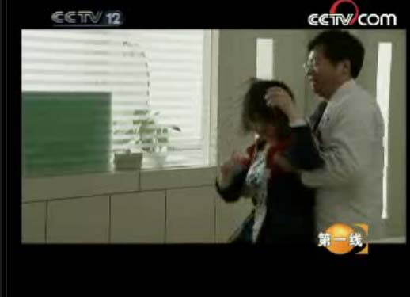

玩游戏的孩子，"男的都变小偷，女的都变三陪小姐".
同样，我们对有些教授专家的憎恨也没有必要如此强烈。
就拿陶宏开来说，他自己早已经把话说得很清楚，不良游戏是毒品，但关键看自己，如果自己抵御能力强就可以做到百毒不侵。
这话实际就是变相的告诉家长问题不是游戏而是人本身。
他也说过教育问题严重，但目前教育改革不了。还有家长不可能都是合格的家长。
这话的意思也很明确：
问题的根源是学校教育和家庭教育，但客观原因是这两个失败的教育在目前都无法改变，唯一能改变的就是游戏。
通常来说这些混帐逻辑不应该存在于现代文明，我们都知道，孩子出问题，家长至少有85%的责任，学校和社会也有10%以上，游戏的责任恐怕只有1%，因为游戏只是一个矛盾爆发点，或者说是个诱因，没有游戏，早晚有其他事物会将失败的教育问题暴露出来。但现在由于占比重在95%以上的根源无法解决，于是就该找那1%都不到的游戏下手，把所有的板子全打在游戏身上，这说不出是真糊涂还是假糊涂，以中国人的智慧，难道会蠢到认定游戏能把善良的天使变成狂暴杀人的魔鬼么？
其次，即便陶宏开真的就是个大骗子，也好歹是坚持心理沟通来帮助孩子的，总比杨永信搞电击强。说到电击，我们大多想到某些恐怖片中的刑房。而杨永信也正是以严刑逼供的方式使孩子们承认自己有网瘾的。

昨日之歌：即使上了CCTV，即使全国都知道了杨永信的行为甚至已经到了反人道的地步。 但是他现在仍然安好，每年赚上几千万——从一群愚昧的家长手里。
后来有一篇揭露杨永信电击孩子的报道，其中有相当篇幅为了做铺垫，特地将13号房（电击室）做了极度的渲染，这简直就是《1984》里的桥段，如果不是想到那些孩子受的折磨，我看到这里差点笑出来。可想而知，杨永信这一套做法应该属于什么性质。
真正令人悲哀的是，这样明显的骗局，就有那么多家长相信，花钱让孩子去受折磨，他们宁可孩子被折腾的生死不如也不肯自己去与孩子沟通交流。而一个做出如此残酷事情的骗子杨永信，竟然还没有被抓起来，居然还在继续行骗，还有很多人在为他辩护。已经21世纪的中国，还有如此之多的人愚昧无知，真是不幸。
最后，再说到陶宏开，我不建议对这个颇具争议的人物穷追猛打，我们都见过他在节目辩论中的表演，他的手段一般有3个：
1 将谎话一整套说出来，把一些虚构的数据套在每一句里，然后一起放出，感觉形势严峻，不把游戏灭掉就要亡国灭种。
2 不断打断对方的讲话，让对方的观点无法表述。
3 在理屈词穷时，开始人身攻击，给对方扣帽子。
不过就算我们通常过了他这3板斧，节目也快结束了。原因是节目的倾向性是倒向他的，因此随意他表演，他也时常带着自己的跟班一唱一合。但只要放到公平的语境下，他立刻原形必露。